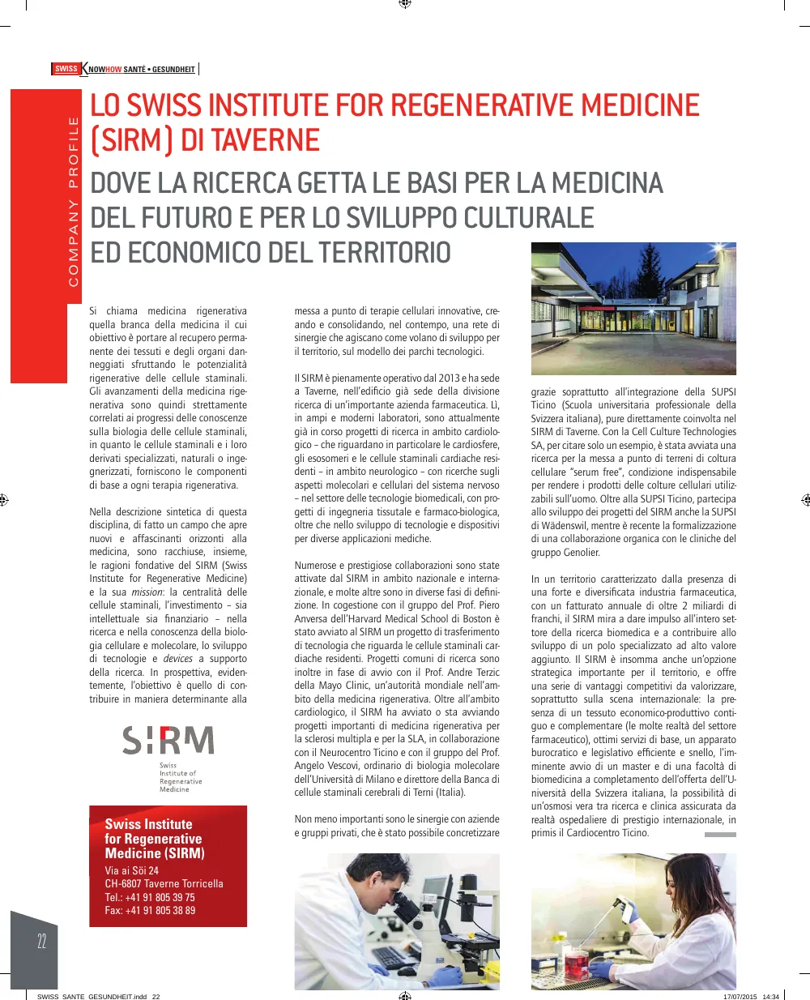

Interview · Swiss Knowhow – Santé • Gesundheit 2015
SSCB – Swiss Stem Cell Bank: tra conservazione e ricerca, un impegno a tutto campo sul fronte delle cellule staminali
Dr.ssa Franconi, di cosa si occupa precisamente la Swiss Stem Cell Bank?
SSCB Swiss Stem Cell Bank è oggi una società impegnata su più fronti e diversi ambiti che riguardano le cellule staminali. In primo luogo siamo una biobanca privata, cioè conserviamo materiale biologico per conto dei nostri clienti in funzione di un possibile utilizzo terapeutico di quel materiale. In quest’ambito, siamo prevalentemente concentrati sulle cellule staminali contenute nel sangue del cordone ombelicale. A questa attività originaria, per la quale abbiamo maturato un’esperienza decennale che pone tra le realtà di riferimento in Europa, abbiamo più recentemente affiancato un forte impegno nella definizione di un processo di separazione e conservazione delle cellule staminali del tessuto adiposo, processo per il quale abbiamo ottenuto – primi in Svizzera – una specifica autorizzazione da parte di Swissmedic.
C’è poi un’intensa attività di ricerca e c’è, infine (ma non meno importante), un servizio di consulenza sui trial clinici che utilizzano le cellule staminali e sulla possibilità di potervi accedere.
Come si svolge il servizio di conservazione delle cellule staminali del cordone ombelicale?
In seguito alla sottoscrizione del contratto, i genitori ricevono da noi il kit per il prelievo del sangue cordonale, una procedura semplice e indolore che viene effettuata dal personale di sala parto.
Giunto in laboratorio – il nostro è a Taverne, all’interno del SIRM, l’Istituto Svizzero di Medicina Rigenerativa – il sangue viene immediatamente trattato nel rispetto dei più scrupolosi protocolli di qualità e sicurezza. Al termine del processo, le cellule staminali vengono trasferite in una struttura di conservazione in azoto liquido, da dove potranno essere recuperate qualora servissero per un trapianto.
Credo comunque che valga la pena di spendere due parole sulla qualità e la sicurezza delle nostre procedure. “Lavorare” e conservare un campione di cellule sapendo che esso potrebbe venire utilizzato come un farmaco per un trapianto implica da parte della banca un’assunzione di responsabilità molto forte. La qualità del nostro lavoro – e la nostra “diversità” rispetto ad altre realtà di un settore che purtroppo è poco regolato, sia in Svizzera sia in Europa – è certificata dall’autorità mondiale di riferimento per le banche del cordone ombelicale, l’americana FACT-Netcord. Oggi le banche accreditate sono solo 52 in tutto il mondo, e di queste quelle private sono meno di 10.
Qual è lo stato della ricerca?
Probabilmente non esiste un fronte della ricerca più in fermento di quello che riguarda le cellule staminali, sulle quali la medicina ripone enormi speranze e non poche certezze. Già oggi vengono trattate con le cellule staminali oltre 80 patologie, mentre gli studi clinici – cioè le terapie sperimentali autorizzate e condotte con le massime garanzie di sicurezza per i pazienti – sono nel mondo oltre 4 mila. Si tratta di ricerche che affrontano le più diverse malattie, dal diabete alla paralisi cerebrale infantile, dall’infarto al Parkinson, a molte altre, per alcune delle quali la medicina non è ancora in grado di offrire delle cure.
Va detto tuttavia che i tempi della ricerca medica sono inevitabilmente e necessariamente lunghi, perché si procede con estrema cautela per non mettere a rischio la salute e la vita dei pazienti.
Progetti in cantiere?
Siamo una società dinamica e di progetti in cantiere ne abbiamo tanti. Devo dire che la scelta di trasferirci all’interno del SIRM di Taverne si è rivelata estremamente stimolante sul fronte della ricerca, che ci vede impegnati sia nello sviluppo di devices – per esempio stiamo realizzando insieme con la SUPSI un dispositivo per ottimizzare e automatizzare il prelievo del sangue cordonale – sia in progetti di ricerca clinica anche in collaborazione con altre importanti realtà nazionali ed estere. La crescita e il consolidarsi di sinergie locali e internazionali sono certamente la chiave di volta del nostro sviluppo futuro.
Interview publiée en italien et en anglais (p. 19) ; version italienne conservée.
Texte paru dans Swiss Knowhow – Santé • Gesundheit 2015, p. 18, tel que publié dans l'édition imprimée. En cas d'écart, la version imprimée fait foi.
Articles
 Interview · texte intégral
Interview · texte intégralSSCB – Swiss Stem Cell Bank: tra conservazione e ricerca, un impegno a tutto campo sul fronte delle cellule staminali
Intervista a Patrizia Franconi, CEO (version anglaise incluse)
 Publireportage · texte intégral
Publireportage · texte intégralForte impegno nella ricerca, eccellenza clinica e innovazione tecnologica: il Cardiocentro Ticino guarda avanti
Version anglaise incluse : Cardiocentro Ticino looks to the future

Publireportage · texte intégralLo Swiss Institute for Regenerative Medicine (SIRM) di Taverne
Dove la ricerca getta le basi per la medicina del futuro e per lo sviluppo culturale ed economico del territorio (version anglaise incluse)